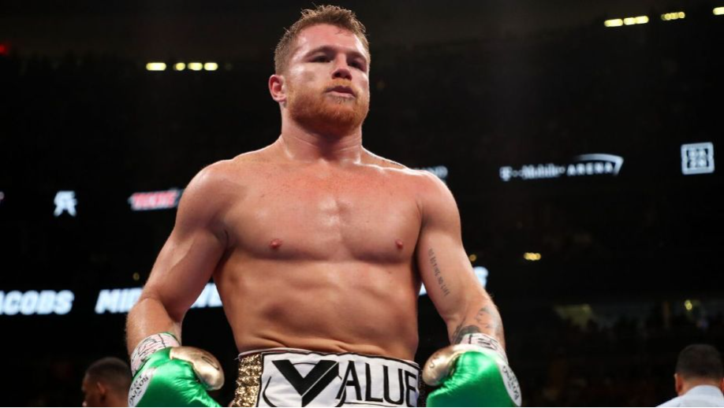
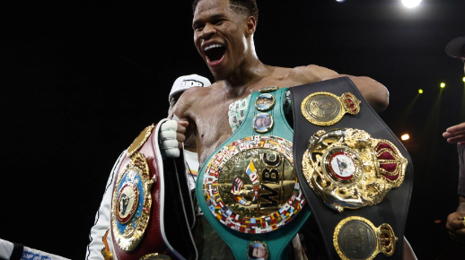

1. TERENCE CRAWFORD 39-0, 30 KOs

Ninguém jamais questionou o talento de Crawford. Mas o agente livre promocional de 35 anos desistiu das negociações para lutar contra Errol Spence Jr. em novembro pelo campeonato indiscutível dos meio-médios. "Bud" marcou um nocaute estrondoso sobre David Avanesyan em sua única aparição em 2022, enquanto os olhos continuam olhando para o confronto de unificação.
2. NAOYA INOUE 23-0, 20 KOs
Aos 29 anos, o "Monstro" japonês está operando no auge do que está se tornando uma grande carreira de todos os tempos. O campeão de três divisões acrescentou o status indiscutível de 118 libras ao seu currículo ao derrotar um excessivamente cauteloso Paul Butler para se tornar o primeiro campeão de quatro cinturões na história da divisão. Espera-se que Inoue suba para 122 libras em seguida, onde não faltam adversários de elite.
3. OLEKSANDR USYK 20-0, 13 KOs
A corrida profissional de Usyk foi tão decorada quanto perfeita. O ex-campeão peso-médio indiscutível ainda tem um forte argumento de melhor lutador do esporte depois de derrotar Anthony Joshua em sua revanche em agosto . Infelizmente para os fãs, uma luta pelo título indiscutível contra o campeão WBC Tyson Fury continua a aludir a Usyk, apesar de parecer fácil de fazer.
4. ERROL SPENCE JR. 28-0, 22 KOs
A única luta que faz sentido para Spence é um confronto indiscutível com o campeão WBO Terence Crawford pelos quatro títulos. A boa notícia é que as negociações continuam nos bastidores para uma possível superluta neste verão, o que se tornou mais provável quando as negociações para uma luta de Spence contra Keith Thurman até 154 libras diminuíram.
5. CANELO ALVAREZ
O ex-rei do P4P ainda é o campeão indiscutível de uma das divisões mais quentes do esporte e um dos melhores boxeadores do jogo. Mas está claro aos 32 anos que Alvarez está desacelerando um pouco, cerca de 18 anos em sua carreira profissional. Uma vitória por decisão sobre o adversário obrigatório John Ryder em maio confirmou que Alvarez parece determinado a garantir uma revanche contra Dmitry Bivol até 175 libras.
6. DMITRY BIVOL 21-0, 11 KOs
Criticado às vezes por jogar pelo seguro no passado, Bivol foi tudo menos em sua vitória de carreira sobre o rei peso por peso Canelo Alvarez. O campeão até 175 libras foi ainda mais explosivo em uma paralisação convincente do invicto Gilberto "Zurdo" Ramirez em novembro.
7. TYSON FURY 33-0-1, 24 KOs
O "Gypsy King", de 34 anos, escolheu permanecer ativo em uma trilogia desnecessária contra Derek Chisora em dezembro. O problema agora é que Fury não mostrou nenhum sinal de realmente querer uma luta pelo título indiscutível contra Oleksandr Usyk, enquanto ele continua a fazer acusações aparentemente falsas ao rei unificado por evitá-lo.
8. ARTUR BETERBIEV 19-0, 19 KOs
Artur Asilbekovich Beterbiev ( checheno : Бетербиев Асильбекан Артур, russo : Артур Асильбекович Бетербиев ; nascido em 21 de janeiro de 1985) é um boxeador profissional russo-canadense . [2] [3] Ele é um campeão unificado dos meio-pesados , tendo detido o título IBF desde 2017, o título WBC desde 2019 e o título WBO desde 2022.
9. SHAKUR STEVENSON 20-0, 10 KOs
Recém-saído de uma vitória sobre Robson Conceição no outono passado, Stevenson subiu de peso e finalizou Shuichiro Yoshino invicto em abril para se anunciar no peso leve. Embora seja provável que Stevenson continue sendo evitado, ele declarou suas esperanças de enfrentar o vencedor de 20 de maio da indiscutível luta pelo título Devin Haney-Vasiliy Lomachenko.
10. DEVIN HANEY 29-0, 15 KOs
Com vitórias consecutivas na Austrália sobre George Kambosos Jr. próximo desafio. Haney detém todos os cinturões no topo da divisão mais empolgante do esporte e só está melhorando aos 24 anos.